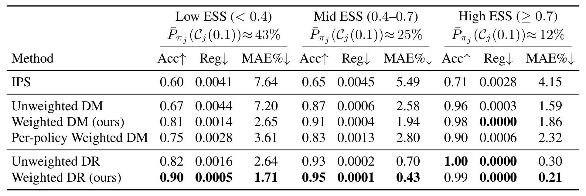
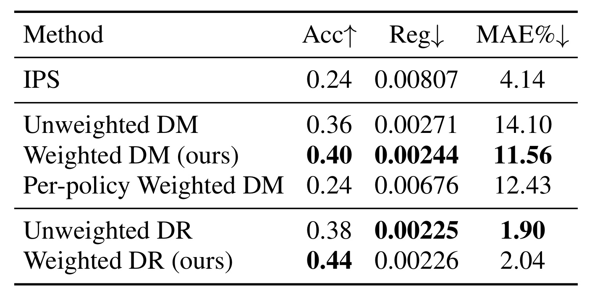
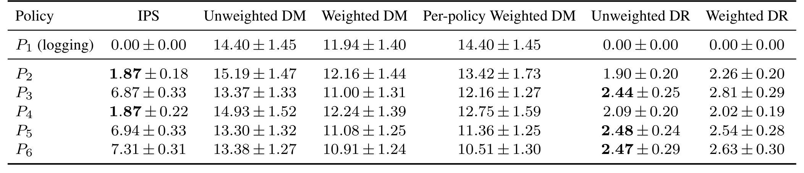
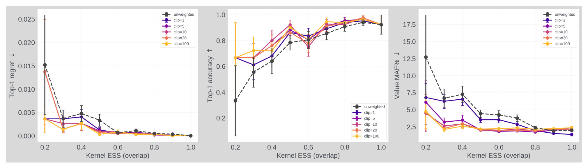
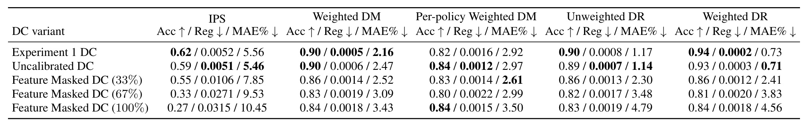
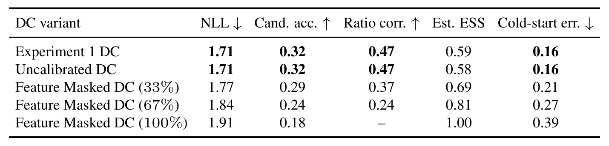

Beyond IPS：多阶段广告系统缺失倾向概率时，怎样判断离线评估是否可信
Mohsen Malmir、Mohamed A. Radwan、Houssam Nassif 和 Murat Ali Bayir 均来自 Meta Platforms。论文于2026年10月29日UTC首次提交，本轮阅读28页完整版本，访问日期为2026年11月2日。论文入口为 arXiv:2610.40112。作者模拟器代码仓库已核验可访问且内容对应本文；公开范围为合成实验，生产数据、嵌入和训练后的生产模型不公开，本轮没有运行训练复现。PDF中的会议模板与作者仓库自述不单独作为正式录用状态的核验依据。
多阶段广告投放中，曝光动作的倾向概率经常没有记录，传统逆倾向加权难以使用；直接用奖励模型重放又会在候选策略改变曝光分布时产生偏差。论文要解决的是如何让奖励模型更适合候选策略，并明确哪些分布缺口使离线评估仍不足以替代线上实验。
1. 背景和问题
广告排序模型的离线预测能力与上线后产生的策略价值是两个问题。日志上的AUC、log-loss或信息增益，回答的是模型能否预测生产系统已经展示过的广告；新模型上线后会改变哪些广告进入曝光，最终点击率则取决于这一新分布。如果新模型把曝光转向旧系统很少选择的用户—广告组合，原来的预测测试集可能几乎没有覆盖这些组合。一个在日志分布上误差更小的模型，并不必然能选出价值更高的策略。本文因此把评估对象从“预测器是否准确”转到“采用这个排序策略会得到什么结果”，并进一步关注从若干候选中挑选哪一个。
这里的难点并不是简单补一个随机采样概率。真实广告系统通常包含召回、粗排、精排、竞价、定向过滤、缓存及业务约束，多种机制共同决定最后曝光。日志中即使保存了排序器分数，也未必能还原动作从候选集到最终展示的完整选择概率；某些环节还是确定性的。直接把一个分数做softmax并当作倾向概率，会把未建模的投放过程藏进一个看起来正规的权重。论文以“倾向概率不可得”为起点，但并没有声称因此能够绕过因果评估的所有假设；它转而利用能够重放的候选动作和学习的响应函数，重新说明可识别的范围。
Direct Method的常见做法是先用历史曝光训练奖励模型，再把候选策略应用于历史上下文，为其选出的动作预测点击概率，最后求平均。它的优点是不要求每条曝光都有行为倾向概率，且能够复用成熟CTR训练链路。代价是所有未发生动作的结果都依赖奖励模型的外推。若候选策略与日志策略选出的动作差不多，训练分布与评估分布较接近；若候选策略主动探索另一批广告，训练损失降低可能主要发生在旧策略偏好的区域，对新策略真正会展示的广告帮助有限。候选之间的偏差还可能不同，最终扭曲它们的相对排名。
本文没有分别给每个候选训练一套奖励模型作为主要方案，而是让一个共享奖励模型面向所有候选的混合曝光分布训练。这个选择对应真实迭代流程：同一轮可能比较多个排序配方，维护多个独立响应模型既昂贵，也会引入互不相同的校准偏差。共享模型把训练关注度分配给候选集合共同关心的曝光，同时保留候选之间统一的预测尺度。不过共享并不自动保证公平：混合系数决定每个候选获得多少训练关注，候选数量增加后每个分量的份额也会变化。论文默认均匀混合，并通过逐候选加权基线检验其收益是否仅来自“针对某个候选重加权”。
需要特别区分两类数据。重放能产生“同一上下文下这个候选会选哪个动作”，但不能产生这个未展示动作真实会获得多少点击。因此，域分类数据可以包含候选动作，奖励监督仍来自已观察的曝光。重放样本不是凭空增加的反事实标签，学习到的密度比也不能让完全没有日志支持的区域突然有了奖励事实。这一区别贯穿论文的支持集限制、冷启动质量与最终分流规则：某些误差能靠更好的建模和更多数据减小，另一些误差则需要真正的干预或额外结构假设。
从推荐系统角度看，这项工作贴近模型上线前筛选，而非提出新的召回器或排序网络。它适用于能够在同一批上下文上运行多个候选、能够构建候选实际曝光表示、又缺少可靠propensity日志的场景。若只能拿到离线预测分数，无法重放定向、竞价或其他影响动作的环节，论文的前置条件可能仍不满足。对于生成式推荐，这尤其值得注意：改变SID树、beam宽度或价值剪枝可能改变候选覆盖，离线样本指标相近并不意味着展示分布相近，评估应明确自己重放的是哪个系统阶段。
对大模型和Agent而言，可以迁移的是评估设计：旧策略收集的轨迹往往集中在原来会采取的工具或响应上，新策略可能访问不同状态。如果用同一个奖励模型给新策略轨迹打分，既要看奖励模型在旧轨迹上的拟合，也要看新策略是否把质量放到未覆盖区域。本文没有做LLM实验，不能把其生产CTR结果外推成Agent可靠性保证；但“支持集之外不能靠加权补出事实”这一认识，有助于约束奖励建模、离线偏好优化和自动迭代中的过度自信。
还要分清“价值预测误差小”和“选对最优候选”这两个验收目标。几种策略的真实价值十分接近时，所有估计值即使只错一点点，仍可能互换排名；反过来，所有候选都受到近似相同的系统性偏差时，绝对值不准也可能保持顺序。本文把Top-1选择准确率、选错造成的regret以及价值MAE并列报告，正是为了避免只用一种指标说明评估器优劣。生产实验最后发现前两名不能可靠区分，也因此成为论文的重要结果，而不是应该从摘要中隐藏的失败项。
另一个容易混淆的边界是上下文分布与策略诱导分布。论文把比较限定在同一日志上下文分布下，不是在预测部署新策略以后用户群体、访问频次或广告主行为会怎样长期变化。如果策略影响下一天的用户回访，或者改变竞价市场中的竞争关系，当前重放的单次曝光价值不足以描述整个长期系统。曝光表示也必须足够丰富：若位置、时间或系统状态同时影响奖励，却在表示中被合并掉，给定曝光后的奖励不变假设就可能变成不可检验的近似。这里并非论文证明这些风险已经发生，而是使用者需要在接入之前检查自己的目标是否仍落在文中定义的价值函数内。把边界先写清，才能判断后面的误差项是否覆盖了真正关心的上线损失。
2. 方法
2.1 在候选混合分布上学习共享奖励模型
先定义上下文为用户和请求特征，动作为该上下文中最终选出的广告，两者组成一个曝光。每个候选策略在相同上下文上选择动作，从而诱导不同的曝光分布。论文假设给定曝光后的奖励分布与产生它的策略无关，且候选可以在日志上下文上重放。策略价值和实际使用的经验重放估计为：
符号解释：$X$为上下文，$P_X$为日志上下文分布，$\pi_j$为第$j$个确定性候选策略，$r^\star$是真实期望奖励，$\widehat r$为拟合的奖励模型，$m$为独立评估上下文数量。前者是目标，后者把真实未观测奖励替换为模型预测。估计器复用同一上下文比较不同动作，控制了上下文分布，却没有消除动作选择造成的响应模型偏差。训练与评估必须分开，以便后面把拟合模型视为固定函数并建立有限样本界。
共享奖励模型的目标分布及重要性权重如下：
符号解释：$N$为候选数，$P_{\pi_j}$为候选诱导的曝光分布，$\beta_j>0$为混合份额，$p_j,p_0$为候选和日志分布的密度，$z$为一个曝光；权重只在$p_0(z)>0$的区域定义。论文默认$\beta_j=1/N$，使候选在目标分布中等权。重要性权重增加“候选常见、日志相对少见”的已有样本贡献，减少只与旧策略相关的样本贡献。它重新分配已观察奖励的训练重点，而不是给重放动作补标签。
符号解释：$f$为候选奖励预测器，$Y$为观察奖励，$\ell$为逐样本损失，$n_{\mathrm{tr}}$为奖励训练fold大小，$\widetilde\Omega$为实际使用的截断估计权重。等式右边的指示函数是核心边界：混合风险只在日志支持的部分得到训练。实践中使用加权log-loss；模型类别、优化误差、独立fold与概率截断都进入后续理论。训练完成后同一个$\widehat r$被所有候选的DM重放使用，避免每候选单独响应模型的标尺变化。
2.2 用域分类后验估计密度比
密度函数无法直接求值，但可以区分曝光来自哪个策略。作者在独立fold上，给实际日志曝光标类零，给每个候选在相同上下文上重放得到的曝光标类$j$，用均匀类别先验训练多类域分类器。标签表示曝光来源而非点击标签。生产侧使用shadow-mode scoring生成候选动作，模拟器则直接重放评分函数，二者都要求曝光表示保留导致策略分布不同的信息。
符号解释：$q^\star$是均衡域分类问题的总体后验，$q_\theta$是学习的后验，$g$为来源类别。等先验时总体后验之比等于密度比，实践将总体量替换为估计量。若采样先验不均衡，还需先验修正，不能原样照搬。分类器不必给每个曝光高置信分类才有用，但概率比的可靠性依赖校准和可区分表示；缺失广告特征时即使输出很平滑，也不代表真实分布重合。
符号解释：$c$是权重上限，ESS为有效样本量，论文报告$\mathrm{ESS}/n$以便比较。截断限制少数大权重主导训练，代价是削弱对远离日志分布区域的校正。ESS接近样本量说明估计权重较均匀，只有分类器本身能保留策略差异时才可解释为良好重叠。训练奖励模型、训练域分类器、校准和最终重放评估使用不同fold，避免权重和奖励拟合在同一批样本上产生耦合过拟合。这个样本分离不是可忽略的实现细节，而是理论中独立性条件的工程对应。
2.3 把可减小误差和冷启动误差分开
作者用日志类的总体后验划分目标策略的曝光，得到重叠区域与冷启动区域：
符号解释：$\tau$是日志支持阈值，$O_j$为重叠区域，$C_j$为低日志支持区域，$\mu_j$为候选曝光落入后者的质量。这里“冷启动”不是单纯新用户或新广告，而是相对日志分布的覆盖不足。阈值变小会减少冷启动区域，却放大重叠区的换测度系数；阈值变大则相反。因此不能只调阈值让冷启动比例看起来低，而应同时看完整误差界。
符号解释：$E_j^{\mathrm{ov}}$是重叠区奖励误差，$R_{\max}$为奖励上界，$\delta_{\mathrm{ev}}$为评估事件失败概率；$\epsilon_{0,j}$为日志分布上的重叠误差，$c_\ell$为损失校准常数，$A_{\mathcal F}$为模型类别逼近误差，$\epsilon_{\mathrm{opt}}$为优化误差，$\Gamma$为加权泛化偏差界，$L_{\max}$为损失上界，$\epsilon_w$为权重误差。该结论在训练和评估联合高概率事件中同时覆盖所有候选，两种重叠上界各有用途，不能假设某一分支永远更紧。点击概率取$R_{\max}=1$，log-loss预测截断在正的小概率区间内，以满足有界条件。
符号解释：$\epsilon_{\mathrm{DC}}$是域分类密度比估计误差，$\epsilon_{\mathrm{clip}}$是真实权重超过截断上限的尾部偏差，$\mathbb E$均在日志分布下取值。更大的训练数据不一定消除固定截断造成的偏差；若真实混合比经常超过$c$，渐近要求的$\epsilon_w\to0$也不自动成立。理论中可减小的项包含模型逼近、优化、泛化、密度比及重放采样误差，冷启动项则指出没有日志奖励支持的部分仍须保守处理。将所有误差概括成“分类器不准”会漏掉建模能力和根本支持集的差别。
2.4 从值估计到候选选择与残差校正
选错策略的损失由最坏候选估计误差控制；当可减小误差趋于零时，冷启动质量决定渐近风险预算：
符号解释：$j^\star$是真实最优候选，$\widehat j$是离线选出的候选，$\Delta$是容许regret预算。右侧判据只在渐近条件下支持离线选择。它要求模型拟合、优化、泛化、权重和重放误差均可忽略；否则应使用全界，而不是直接用估计冷启动比例做上线开关。总体后验还需可靠估计，论文没有将这一分流规则在真实线上运营中完整验证。
实验还在DM基础上加入日志残差校正，构成DR比较：
符号解释：$\widetilde\Omega_j$为截断的逐候选密度比，$r_i$为日志奖励，$\widehat r(z_i)$为同一曝光上的预测。残差项用观测纠正响应模型的系统误差；Weighted DR与Unweighted DR的差别在控制变量奖励模型是否采用混合加权训练。这里的权重仍由域分类器估计，不能仅凭“doubly robust”名称忽视缺失支持、截断和密度比错误。主文理论界针对重放DM展开，DR实证改善不能被写成本文已经证明所有DR变体在多阶段系统下无偏。
3. 实验结果
3.1 模拟器：先看选择任务，再看均值误差
合成环境包含一万用户、一千广告，每次从十个候选中选一个。用户和广告各有三维特征，真实奖励由四百个高斯核组合并截断构成；日志和候选评分函数使用另一组核参数。每trial收集七万曝光，分为两万域分类训练、两万奖励模型训练、一万校准、两万评估。奖励是oracle期望值，没有再做伯努利点击采样，因此噪声结构比真实点击更简单。候选按预设价值倍率与ESS目标校准，五十种子乘七组目标形成三百五十trial，其中五十六个trial因未找到合格偏移而少于六候选。这个构造能控制分布偏移和真值，但并非任意真实排序策略分布的完整代表。

Table 1按目标ESS划分低、中、高重叠三组，而非附录逐realized ESS的细分；表头还给阈值零点一时估计的平均冷启动质量，约为百分之四十三、二十五和十二。每组的Acc是选对真实最优候选的频率，Reg是选错相对oracle最优的期望价值损失，MAE是估计策略价值的相对绝对误差百分数。低ESS下，Unweighted DM准确率为零点六七，Weighted DM提高到零点八一，regret由零点零零四四降至零点零零一四，MAE由七点二降至二点六五；改善较清楚地对应作者要解决的分布偏移。逐候选加权DM只到零点七五，说明训练一个面向候选混合的共享模型并非简单重复各候选单独加权。Weighted DR在低、中ESS组的三项指标均最好，但高ESS时Unweighted DR的准确率一点零零略高于Weighted DR的零点九九，regret两者都接近零，而Weighted DR的MAE更低。高ESS下Weighted DM的MAE一点八六还略差于Unweighted DM的一点五九，因此“加权在全部指标全部环境都更好”并不成立。表中模拟IPS也使用估计密度比，而不是拥有真实倾向概率的理想IPS，读者不能把它的劣势解释成传统IPS理论本身失效。
所有奖励模型采用相同的一层六十四单元MLP、优化器、轮次及校准设置，差别主要是样本权重；域分类器训练四轮，奖励模型三十轮，模拟裁剪上限一百，全部在CPU运行。控制这些设置使模型容量不能解释主要差异。模拟实验的价值是能同时知道oracle策略价值和密度比诊断，清楚区分模型误差与选择错误。局限则在于候选价值倍率的主动构造、低维核环境和期望奖励消除了很多生产噪声，不能用零点九准确率直接预期真实平台同样达到这一水平。
3.2 生产数据：最高选择准确率仍不足以区分前两名
生产实验包含一个日志策略和五个候选策略，六者各自服务独立线上流量，真实价值以其实际评估曝光CTR确定。Top-1准确率只在五候选之间计算，随机选择基线为零点二；价值MAE则对包括日志策略的六策略求平均。所有结果来自五十次随机数据子采样，生产截断上限改为二十，不能与模拟上限一百混为一个默认超参数。候选动作通过shadow scoring重放，离线评估器没有获得未展示动作的真实点击标签。

Table 2中Weighted DM的准确率零点四，高于Unweighted DM的零点三六和逐候选Weighted DM的零点二四；相应regret零点零零二四四低于零点零零二七一和零点零零六七六，MAE百分之十一点五六也小于百分之十四点一和十二点四三。对DM家族，这是一组方向一致的提升。加入残差校正后Weighted DR准确率零点四四，是全表最高，但Unweighted DR的regret零点零零二二五略低于零点零零二二六，MAE百分之一点九也低于百分之二点零四。两种DR不能按任意一个指标宣布全面占优。IPS的MAE百分之四点一四远低于DM家族，却只有零点二四选择准确率和全表最高regret零点零零八零七，进一步证明值预测误差与最优策略选择并不是同一目标。表中的差异应按各指标原始单位分别比较。这里准确率提高是评估器选对候选的频率增加，不是用户CTR增加四十四个百分点，也不是新排序器本身带来的业务增益；regret的单位来自策略价值，不应与MAE百分数直接相减。
论文给出了比均值表更有实践意义的警报：Weighted DM估计的第一名平均只比第二名高百分之零点一五，描述性配对bootstrap百分之九十五区间为负百分之零点三一到正百分之零点六；五十次子采样中排序翻转二十四次。区间跨零与接近一半的翻转说明，当前离线证据不能可靠排出前两名，需要把这一候选集合送入线上AB。这个判断并不否定Weighted DM比其他DM更好，而是说明相对改善与达到最终决策置信度是不同层次。论文没有报告一个已经自动运行、能稳定分流线上实验的生产闭环，所以不应把渐近判据写成验证完毕的上线策略。

Table 9将前面的平均误差拆开，P1是日志策略，P2至P6才是候选。对P1，IPS及两种DR的误差为零，是因为密度比恒为一，估计退化成日志奖励均值，并不是这几种方法在所有曝光上都预测完美；这个结构性零值还会降低六策略平均MAE。对真正候选，Weighted DM的误差大致在百分之十点九一到十二点二四，优于Unweighted DM的十三点三到十五点一九；但相对逐候选Weighted DM，P6上十点九一反而略差于十点五一。两种DR通常更低，不过Weighted DR在P2、P3、P5和P6的MAE高于Unweighted DR，只有P4更低。这些细节解释了主表中Acc最好与MAE未最好为何可以同时存在。表中正负号后的量是五十次子采样标准误，不能与候选间差距的配对bootstrap区间混用；要判断具体候选能否区分，应使用共同抽样下的差值不确定性，而不是分别看两个均值的小数位。生产数据、表示和训练后的模型没有公开，读者能复现的是合成部分及其诊断流程，无法凭仓库完整重做这张生产表。
3.3 截断：稳定性与分布校正之间的取舍

Figure 1把oracle、未截断核密度比的ESS作为横轴，分别画regret、Top-1准确率和MAE；曲线来自同一trial中训练一次域分类器，再尝试上限一、五、十、二十和一百，避免把分类器训练差异混入截断效应。横轴与Table 1的目标ESS、附录的估计realized ESS并非同一分箱口径，不能拿相同数字当成相同人群。总体上上限十、二十、一百的MAE曲线很接近，在各核ESS分箱内相差不超过零点五二个百分点，表明这一区间对当前模拟设置较稳健。上限一则去掉了所有向上加权，低重叠区域退化得接近未加权模型，说明过强截断会破坏本来需要的分布校正。然而在高重叠零点九至一点零区间，上限一的MAE反而最低，说明尾权重在不同覆盖条件下的价值不一样。上限五在若干低重叠点也会产生更高regret，不能仅凭某一列MAE挑阈值。误差棒为种子及trial分组标准误，图中的小幅交叉不能被解读成所有业务都应固定采用一百。工程上更合理的是在独立校准集上结合选择任务、权重尾部和覆盖程度选择阈值，并报告不同上限是否改变候选排名。
3.4 分类器可靠性：估计ESS越高也可能越危险

Table 7使用同一批三百五十模拟trial，比较原域分类器、去掉温度校准、以及遮蔽广告特征百分之三十三、六十七和全部三种变体。各单元格按准确率、regret和MAE顺序排列，必须先看表头再读数字。原配置Weighted DM准确率零点九，随着特征遮蔽变为零点八六、零点八三和零点八四；Weighted DR从零点九四降到零点八六、零点八一和零点八四。全遮蔽后只能看到所有策略共享的用户特征，无法区分不同广告选择，权重趋于常量，加权方法接近未加权方法。这里的“原配置零点九”是跨trial聚合，不能与主表低ESS组零点八一直接比较。这些差值来自同一模拟设置，不能把遮蔽百分比直接等同于真实平台特征缺失率。移除温度校准的结果与原配置接近，只能说明该模拟器和训练设置下这一校准步骤影响小，不等于域后验在一般场景无需校准。特征被遮蔽造成的退化比是否做温度缩放更显著，说明先保留策略分布差异，再讨论概率数值可靠性，是方法有效的前提。

Table 8提供最值得带走的反例。广告特征逐步丢失时，NLL从一点七一升至一点九一，候选来源分类准确率从零点三二降至零点一八，密度比排名相关性从零点四七降到百分之六十七遮蔽时的零点二四；全遮蔽时比值为常量，相关性无法定义。与此同时，估计ESS从零点五九反而升到一点零，冷启动质量估计误差从零点一六增至零点三九。如果只监测ESS，会把“分类器看不出区别，权重变平”误判成“新旧策略越来越相似，离线评估更可靠”。表格因此要求把权重诊断与表示质量、域分类器辨识能力一起看。在真实数据里，oracle比值相关性和真实冷启动误差不可获得，NLL和候选分类准确率虽能提示问题，却无法单独区分“策略真的相似”与“输入漏掉重要特征”。这意味着方法并没有一个无需额外证据即可保证安全的ESS阈值；低分类准确率也可能有两种完全不同的原因，必须结合策略设计、特征审查和小规模干预判断。正文理论使用总体后验，而部署使用学习后验，这张表恰好把两者之间不可跳过的验证环节暴露出来。
4. 总结
我的判断是，本文最有价值的组合并非某一个新的CTR网络，而是共享候选混合奖励模型、覆盖诊断、拒绝过度离线决策三者一起出现。重加权把模型训练重点移向候选真正会访问的曝光；误差界说明哪些改善依赖拟合、权重和采样，哪些仍受日志支持限制；生产实验则承认即使评估器相对改善，前两名仍然可能无法分辨。这种结果比只展示一个选择准确率更适合进入真实模型迭代流程，因为它给出“何时还不知道”的语言和证据。
推荐系统可先将其做成影子评估的附加层：固定同一批请求与完整投放逻辑，收集日志及候选曝光表示，独立训练域分类器和响应模型，再并列比较未加权DM、混合加权DM与两类DR。验收不只看MAE，还应看候选排名、差值区间、权重集中度和冷启动质量的稳定性。对大模型奖励评估，能迁移的是分布覆盖意识：新策略访问不同工具或轨迹时，旧日志奖励模型的高精度未必仍然有意义。但本文只实验广告排序，跨领域迁移需要重新建立重放与奖励不变假设，不能直接继承CTR环境中的数值结果。
至少有五个限制影响使用。第一，候选必须能在日志上下文上重放，若真实竞价、过滤或缓存行为不完整，shadow动作可能不是将来真正展示的动作。第二，给定曝光后的奖励必须不随产生它的策略改变，长期用户反馈、竞价均衡或策略身份影响不能被这一简化自动覆盖。第三，表示和域分类器必须保留策略差异，高ESS并不能自证可靠。第四，固定裁剪可能留下不会随样本量消失的偏差，渐近分流需要的权重一致性不是免费条件。第五，生产候选只有五个且接近打平，五十次数据子采样也不是五十次独立线上实验，无法外推任意平台都能获得相同选择准确率。
后续优先做三项复核。先复现公开模拟器的主表及特征遮蔽实验，把估计ESS、真实ESS、域分类误差和策略选择误差放在一起，确认监控不会把分类器退化当成覆盖改善。再在自有日志中审查曝光表示和重放完整性，尤其检查最终动作是否经过未记录业务规则；这决定权重是在估计实际目标分布还是一个近似中间分布。最后以候选差距而非单一评估均值决定是否开线上实验，使用配对差值区间并跟踪候选排名反转，验证渐近判据在有限数据下还剩多少未计成本。上述实验需要隔离调参集，避免反复挑选最有利的候选集合和截断阈值。
此外，候选池本身应当作为评估协议的一部分归档。均匀混合在候选加入或删除后会改变训练权重，理论里的混合份额也随之改变；如果不断用同一评估集筛候选，最终选择的不确定性可能超过单次界的描述范围。每一次数据分割还应保留请求时间和策略版本，以检查评估上下文是否与未来投放范围接近。若奖励或投放链路随时间变化，增加随机子采样次数只会更精确地描述过去那段数据，不能自动修正时间外推。小规模AB并非离线估计失败后的惩罚，而是获取支持集之外真实奖励的途径。本文把这条边界说清楚了，下一步更值得检验的是如何在真实资源预算下组合离线筛选与线上补证，而不是用更复杂的权重公式掩盖不可识别区域。